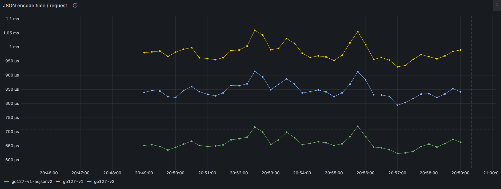
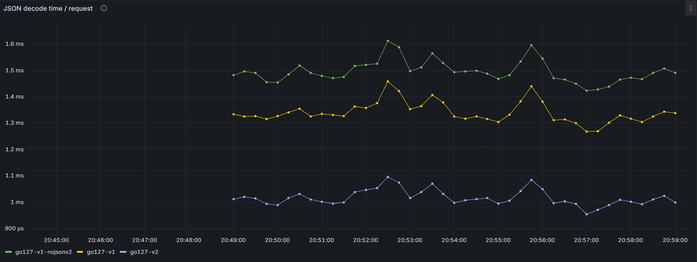

1. О чём этот доклад
JSON v2 — новая major-версия API для кодирования Go-значений в JSON и обратного декодирования. Низкоуровневый пакет encoding/json/jsontext работает непосредственно с JSON-синтаксисом.
Сначала разберём причины появления v2, его API и архитектуру. Затем сравним три конфигурации на одном стенде и посмотрим, какие детали реализации могут влиять на результаты.
2. Почему нельзя было просто поправить v1
Некоторые ограничения encoding/json связаны с давними правилами поведения и формой API. Исправление таких правил в существующем пакете могло бы нарушить совместимость Go.
Неоднозначное поведение
- v1 принимает некорректный UTF-8 и заменяет его при обработке.
- Повторяющиеся имена полей JSON-объекта могут по-разному трактоваться разными программами.
- Сопоставление имён полей без учёта регистра и кодирование nil map/slice могут неожиданно менять смысл данных.
Ограничения API
- Настройки
EncoderиDecoderнельзя единообразно передать во все функции и пользовательские методы. MarshalJSONвозвращает отдельный[]byte, который библиотеке нужно проверить и при необходимости отформатировать.UnmarshalJSONполучает целое JSON-значение. Библиотека сначала находит его границы, после чего пользовательский метод обычно разбирает те же данные ещё раз.- Старые
Encoder/Decoderбуферизуют целое значение; симметричного низкоуровневого API записи токенов нет.
Источник: статья Go A new experimental Go API for JSON.
3. Что v2 улучшает: API и архитектура
API и потоковая обработка
- Значения
Optionsдоступны функциям и передаются через цепочку вызовов. - Есть функции для байтовых срезов,
io.Reader/io.Writerиjsontext.Encoder/Decoder. MarshalerToиUnmarshalerFromпозволяют пользовательскому типу читать или писать через общий поток.
Marshal / Unmarshal []byte
MarshalWrite / UnmarshalRead io.Writer / io.Reader
MarshalEncode / UnmarshalDecode
jsontext.Encoder / DecoderЗадачи пакетов
encoding/json/v2 сопоставляет JSON с Go-типами: учитывает поля структур, типы и пользовательские методы. encoding/json/jsontext отвечает за синтаксис JSON, значения и токены.
Потоковые методы позволяют обойтись без отдельного промежуточного JSON-среза. Обычные Marshal/Unmarshal по-прежнему возвращают или принимают []byte, поэтому эффект зависит от выбранного API и данных.

Источник: A new experimental Go API for JSON.
4. Как проводилось сравнение
Три варианта
go127-v1-nojsonv2: APIencoding/json, сборка сGOEXPERIMENT=nojsonv2.go127-v1: тот же API v1 поверх нового движка, с правилами совместимости.go127-v2: прямой APIencoding/json/v2.
Первые два варианта помогают сравнить движки при одном API; сравнение v1 и v2 включает и различия API с настройками.
Decode замеряется после чтения HTTP-тела, а encode охватывает только вызов Marshal. Поэтому графики показывают длительность JSON-операций внутри сервиса, а не полную HTTP-задержку.
B/op и allocs/op микробенчмарков: это выделенные байты и число выделений на операцию, а не размер живой кучи или RSS. Глобальные счётчики runtime под конкурентной HTTP-нагрузкой для оценки памяти не используются.Условия микробенчмарков
Intel Core i5-12400F, Linux amd64, суффикс тестов -12. Запуск: make bench BENCHTIME=2s COUNT=5. Маленькие объекты содержат 1 элемент, большие — 1000; используются строки, числа, срезы и map[string]any. Encode сериализует Response, decode заполняет новую Request на каждой итерации. Подготовка данных, HTTP и сбор метрик исключены из замера.
Среда запуска: go version go1.27.1 linux/amd64. Версия и параметры сохранены в benchmark-results/environment.txt. Все три варианта собраны одним toolchain Go 1.27: стенд сравнивает реализации и API JSON, а не Go 1.26 с Go 1.27. Настройки v1 и v2 различаются, в том числе порядком ключей map.
5. Результаты encode
Линии: зелёная — прежний движок (go127-v1-nojsonv2), жёлтая — API v1 на новом движке (go127-v1), синяя — прямой API v2 (go127-v2). Каждый график ниже показывает среднее значение на успешный запрос за выбранный интервал.

Добавьте изображение charts/encode-duration.png
Среднее время вызова encodeJSON. На показанном интервале прежний движок занимает примерно 620–720 μs на запрос, API v1 на новом движке — 930–1060 μs, прямой v2 — 790–920 μs. Прежний движок быстрее на всём интервале; прямой v2 занимает промежуточное положение. Пики у трёх серий возникают примерно одновременно.
Сначала сравните старый движок с v1 API на новом движке: у них одинаковый публичный API и правила совместимости. Прямой v2 — отдельное сравнение, потому что вместе с API меняются и настройки по умолчанию. График показывает время под HTTP-нагрузкой; таблица ниже — время и аллокации в микробенчмарке.
Микробенчмарки encode
| Структура | Вариант | ns/op | B/op | allocs/op |
|---|---|---|---|---|
| Маленькие объекты · 1 элемент | go127-v1-nojsonv2 | 1228 | 624 | 11 |
| Маленькие объекты · 1 элемент | go127-v1 | 1778 | 528 | 13 |
| Маленькие объекты · 1 элемент | go127-v2 | 1626 | 463 | 9 |
| Большие объекты · 1000 элементов | go127-v1-nojsonv2 | 1082005 | 519943 | 9002 |
| Большие объекты · 1000 элементов | go127-v1 | 1506946 | 384902 | 10004 |
| Большие объекты · 1000 элементов | go127-v2 | 1392339 | 318672 | 6003 |
Медиана пяти повторов каждого показателя, 2 секунды на случай. Меньше — лучше.
Время encode у старого движка примерно на 24% меньше, чем у прямого v2, для маленьких объектов и на 22% — для больших объектов. При этом v2 выделяет примерно на 26% и 39% меньше байтов соответственно. Прямой v2 также быстрее совместимого v1 примерно на 9% для маленьких объектов и на 8% для больших объектов. У совместимого v1 меньше выделенных байтов, чем у старого движка, но больше отдельных аллокаций. Скорость и память здесь дают разные результаты.
6. Результаты decode
Для decode используются те же три реализации и цветовая легенда: зелёная — прежний движок, жёлтая — API v1 на новом движке, синяя — прямой v2. На этом HTTP-запуске прямой v2 показывает меньшую длительность decode; результаты относятся к данному payload и нагрузке.

Добавьте изображение charts/decode-duration.png
Среднее время вызова decodeJSON. Прямой v2 занимает примерно 0,96–1,10 мс на запрос, API v1 на новом движке — 1,27–1,46 мс, прежний движок — 1,42–1,61 мс. Прямой v2 быстрее на всём показанном интервале, совместимый v1 располагается между ним и прежним движком. График показывает средние длительности операций под нагрузкой, а не перцентили HTTP-задержки.
HTTP-график и микробенчмарк получены в разных условиях, поэтому их абсолютные значения нельзя сопоставлять напрямую. Аллокации сравниваются только по таблице ниже.
Микробенчмарки decode
| Структура | Вариант | ns/op | B/op | allocs/op |
|---|---|---|---|---|
| Маленькие объекты · 1 элемент | go127-v1-nojsonv2 | 3690 | 1136 | 32 |
| Маленькие объекты · 1 элемент | go127-v1 | 2638 | 752 | 19 |
| Маленькие объекты · 1 элемент | go127-v2 | 2098 | 696 | 13 |
| Большие объекты · 1000 элементов | go127-v1-nojsonv2 | 3095086 | 858359 | 24009 |
| Большие объекты · 1000 элементов | go127-v1 | 2327760 | 810718 | 18028 |
| Большие объекты · 1000 элементов | go127-v2 | 1915927 | 762726 | 13027 |
Медиана пяти повторов каждого показателя, 2 секунды на случай. Меньше — лучше.
Прямой v2 сокращает время decode относительно старого движка примерно на 43% для маленьких объектов и на 38% для больших объектов. Выделенные байты уменьшаются примерно на 39% и 11%, число аллокаций — на 59% и 46%. Относительно совместимого v1 прямой v2 сокращает время примерно на 20% для маленьких объектов и на 18% для больших объектов. Совместимый v1 также быстрее старого движка, но прямой v2 показывает лучшие значения всех трёх показателей.
7. Внутри Marshal
Ниже показан путь обычного Marshal, который возвращает []byte. Это детали реализации Go 1.27.1, а не гарантии публичного API.
Прежний движок v1 · encode.go
e := newEncodeState()
defer encodeStatePool.Put(e)
err := e.marshal(v, encOpts{escapeHTML: true})
if err != nil {
return nil, err
}
buf := append([]byte(nil), e.Bytes()...)
return buf, nilencodeState содержит bytes.Buffer; отражение Go-типов записывает в него результат. Перед возвратом буфер копируется в новый byte slice.
Движок v2 · v2/arshal.go
enc := export.GetBufferedEncoder(opts...) defer export.PutBufferedEncoder(enc) xe := export.Encoder(enc) err = marshalEncode(enc, in, &xe.Struct) return bytes.Clone(xe.Buf), err
marshalEncode получает обработчик Go-типа; буферизованный encoder управляет синтаксисом и результатом кодирования.
[]byte для вызывающего кода. Последнее копирование нужно потому, что внутренний encoder возвращается в пул и его буфер нельзя отдать наружу.Оба варианта Marshal материализуют полный результат в []byte. Потоковый выигрыш появляется в других точках API: MarshalWrite пишет в io.Writer, а MarshalJSONTo(*jsontext.Encoder) позволяет пользовательскому типу записать вложенное значение в уже существующий encoder без отдельного JSON-среза.
8. Внутри Unmarshal
jsontext.Decoder решает синтаксическую задачу — читает корректную последовательность JSON. Обработчик из encoding/json/v2 решает семантическую — выбирает Go-тип и заполняет конкретное значение.
Прежний движок v1 · decode.go
var d decodeState
err := checkValid(data, &d.scan)
if err != nil { return err }
d.init(data)
return d.unmarshal(v)Комментарий исходника поясняет порядок: сначала проверить корректность JSON, чтобы не заполнить часть структуры до обнаружения синтаксической ошибки; затем декодировать.
Движок v2 · v2/arshal.go
dec := export.GetBufferedDecoder(in, opts...) defer export.PutBufferedDecoder(dec) xd := export.Decoder(dec) err = unmarshalDecode(dec, out, &xd.Struct, true) return err
unmarshalDecode получает обработчик Go-типа и читает JSON через decoder пакета jsontext.
После проверки аргумента v2 находит обработчик для типа destination и передаёт ему тот же jsontext.Decoder. Обработчики чтения и записи хранятся в lookupArshalerCache. У v1 тоже есть кэши обработчиков и метаданных полей: кэширование само по себе не уникально для v2. Отличаются устройство подготовленных функций и путь их выполнения.
Кэш обработчиков · v2/arshal.go
if v, ok := lookupArshalerCache.Load(t); ok {
return v.(*arshaler)
}
fncs := makeDefaultArshaler(t)
fncs = makeMethodArshaler(fncs, t)
fncs = makeTimeArshaler(fncs, t)
v, _ := lookupArshalerCache.LoadOrStore(t, fncs)
return v.(*arshaler)После первого построения структура делегирует значения полей уже подготовленным функциям.
Повторяющиеся строки в map[string]any
Внутреннее состояние jsontext.Decoder хранит кэш уже созданных Go-строк:
type decoderState struct {
state
decodeBuffer
jsonopts.Struct
StringCache *[256]string
}
type stringCache = [256]string
state хранит состояние разбора JSON, decodeBuffer — входные байты и позицию чтения, jsonopts.Struct — настройки. StringCache указывает на 256 ячеек с Go-строками; кэш используется при Unmarshal.
case '"':
val = jsonwire.UnquoteMayCopy(val, flags.IsVerbatim())
if xd.StringCache == nil {
xd.StringCache = new(stringCache)
}
return makeString(xd.StringCache, val), nil
При первом использовании кэш создаётся лениво. makeString выбирает ячейку по хэшу байтов: если строка совпадает, возвращает уже сохранённую; иначе создаёт новую Go-строку и заменяет содержимое ячейки. Кэшируются строки длиной от 2 до 256 байт.
В нашем payload значение "demo" многократно встречается в map[string]any. При попадании в кэш следующие экземпляры могут переиспользовать уже созданную Go-строку. Это сокращает копирование и аллокации именно для строк; map и slice результата всё равно создаются отдельно. Коллизия хэшей может вытеснить строку из кэша.
Исходники: decoderState, stringCache и makeString.
После вызова буферизованный decoder возвращается в пул, что может сократить временные выделения при следующих операциях. Однако исходники не показывают вклад каждого механизма в измеренную скорость. Полезные map, slice и значения результата нужно создавать в любом случае. В этом стенде строка "demo" повторяется, поэтому кэш строк применим; на данных без повторов эффект может отличаться.
UnmarshalerFrom(*jsontext.Decoder) получает decoder, уже находящийся у начала текущего значения. Метод читает это значение из общего потока и должен оставить decoder сразу после него. В отличие от UnmarshalJSON([]byte), отдельный срез с полным вложенным JSON-значением для вызова метода не требуется.
encoding/json.Unmarshal в конфигурации v2 делегирует в jsonv2.Unmarshal(data, v, DefaultOptionsV1()) — это видно в v2_decode.go. Для сравнения с прежней реализацией стенд отдельно собирает v1 без jsonv2.9. Как jsontext записывает и читает JSON
jsontext отвечает за синтаксис JSON: допустимый порядок токенов, разделители, строки, числа и границы значений. Сопоставление имени "name" с полем Go-структуры находится уровнем выше — в encoding/json/v2.
Запись: Encoder
- Создаём
jsontext.Encoderнадio.Writer. - Передаём токены по одному: начало объекта, имя поля, значение, конец объекта.
- Encoder хранит состояние вложенности и проверяет, допустим ли следующий токен здесь: например, после имени поля должно идти значение.
- Он формирует JSON-текст, экранирует строки и отправляет накопленные байты в writer порциями. В прямом режиме каждый верхнеуровневый JSON-текст завершается переводом строки.
enc := jsontext.NewEncoder(w)
_ = enc.WriteToken(jsontext.BeginObject)
_ = enc.WriteToken(jsontext.String("name"))
_ = enc.WriteToken(jsontext.String("value"))
_ = enc.WriteToken(jsontext.EndObject)
// результат: {"name":"value"} и перевод строки
В реальном коде нужно проверять ошибку каждого вызова. Вложенный массив строится аналогично через BeginArray и EndArray. Вместо серии токенов можно передать готовый синтаксически целый jsontext.Value в WriteValue.
Чтение: Decoder
- Создаём
jsontext.Decoderнадio.Reader; вход может поступать частями. ReadTokenчитает следующий токен и обновляет состояние вложенности.- Decoder проверяет синтаксис по ходу чтения: кавычки, литералы, запятые, двоеточия и соответствие скобок.
- Ошибки синтаксиса и чтения возвращаются вызывающему коду; конец потока обозначается
io.EOF.
dec := jsontext.NewDecoder(r)
tok, err := dec.ReadToken() // {
name, err := dec.ReadToken() // "name"
value, err := dec.ReadToken() // "value"
end, err := dec.ReadToken() // }
_ = tok; _ = name; _ = value; _ = endReadValue вместо одного токена читает следующее полное JSON-значение и возвращает его как байтовый jsontext.Value. Поэтому для объекта целиком можно взять значение сразу, а для выборочного разбора — читать токены постепенно.
MarshalEncode поручает семантическому обработчику Go-типа записывать значения в jsontext.Encoder; UnmarshalDecode даёт обработчику типа читать их из jsontext.Decoder. Пользовательские методы MarshalJSONTo и UnmarshalJSONFrom используют тот же поток, чтобы обрабатывать вложенные данные без отдельного промежуточного JSON-среза.В потоковом режиме encoder и decoder используют внутренний буфер для работы с io.Writer/io.Reader. «Потоковый» означает, что API может обрабатывать токены и значения последовательно, а не то, что внутри никогда нет буферизации.
10. Откуда берётся разница
Исходники показывают несколько различий, которые могут влиять на результат. Одно из них — дополнительный полный проход по входу в прежнем v1. Прямой v2 обычно проверяет JSON по мере декодирования. На производительность также могут влиять подготовленные обработчики типов, кэш строк и повторное использование буферов. Этот стенд не измеряет вклад каждого механизма отдельно.
Старый движок · decode.go
var d decodeState
err := checkValid(data, &d.scan)
if err != nil {
return err
}
d.init(data)
return d.unmarshal(v)Первый проход нужен старому API, чтобы сообщить о синтаксической ошибке до изменения назначения. После проверки decodeState читает те же байты для заполнения значения.
Прямой v2 · v2/arshal.go
unmarshal := lookupArshaler(t).unmarshal
if err := unmarshal(in, va, uo); err != nil {
return err
}Типовой обработчик вызывает jsontext.Decoder, который проверяет структуру входа по мере чтения токенов и значений. Отдельного полного прохода перед этим нет.
unmarshalDecode опция ReportErrorsWithLegacySemantics включает CheckNextValue перед обработчиком. Публичный encoding/json.Unmarshal передаёт DefaultOptionsV1, поэтому сохраняет предварительную проверку. В этом стенде старый API на новом движке не получает эффект от пропуска этого прохода; это свойство прямого v2 пути.Аргумент last во внутреннем вызове unmarshalDecode(..., true) означает, что после значения должен остаться только пробельный хвост и EOF. UnmarshalDecode, напротив, читает одно значение из возможного потока нескольких JSON-значений и передаёт false.
В релизных материалах Go заметное ускорение заявлено прежде всего для Unmarshal. Производительность Marshal в целом описана как сопоставимая с прежней реализацией: в зависимости от данных v2 может оказаться как немного быстрее, так и немного медленнее.
11. Итоги
- JSON v2 даёт отдельное пространство имён для развития API и правил без нарушения совместимости v1.
- Пакет
jsontextобрабатывает синтаксис, аencoding/json/v2сопоставляет его с Go-типами. - Потоковые функции и пользовательские методы могут сократить промежуточные буферы и повторный разбор.
Источники
- A new experimental Go API for JSON — мотивация, устройство пакетов и API.
- Go 1.27 Release Notes.
- Исходники Go: encode.go, decode.go, v2/arshal.go и v2_decode.go.
- Код сервисов и бенчмарков для тестирования и сравнения.